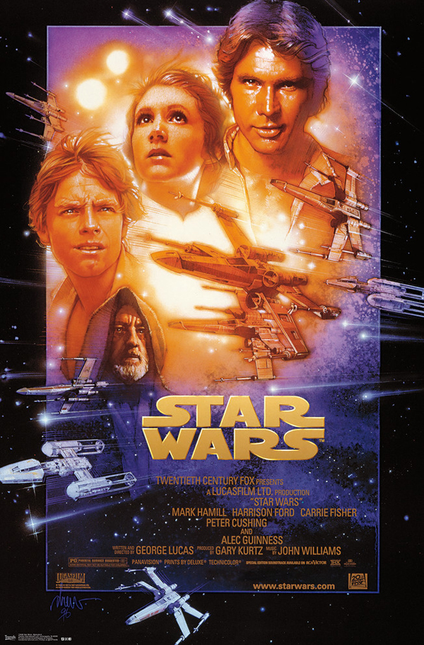
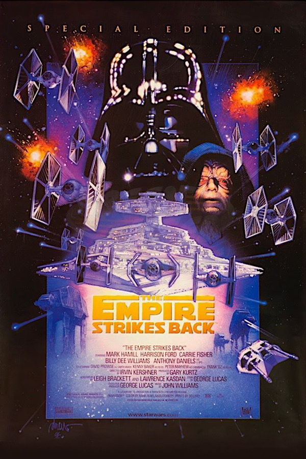
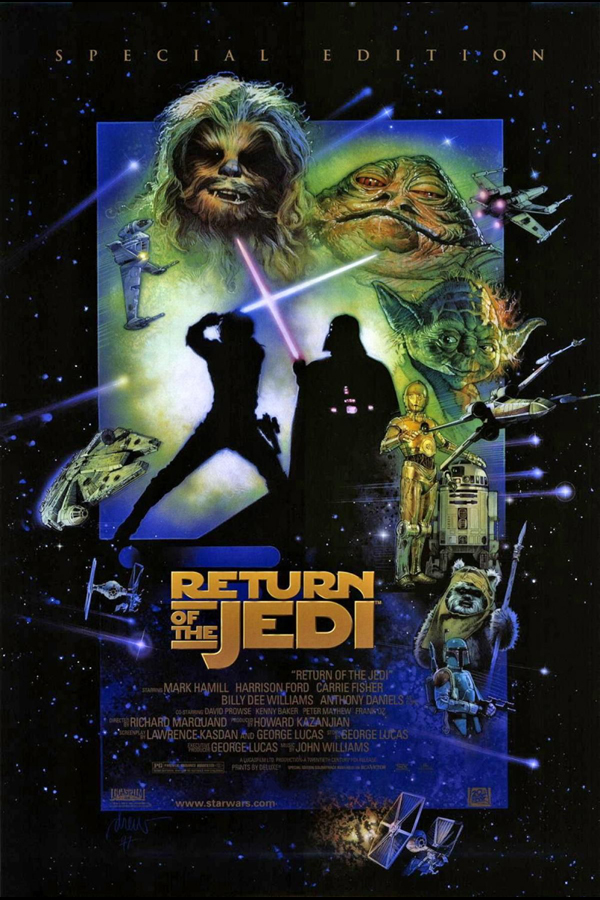

Episode IV: A New Hope
Luke Skywalker joins forces with a Jedi Knight, a cocky pilot, a Wookiee and two droids to save the galaxy from the Empire's world-destroying battle station, while also attempting to rescue Princess Leia from the mysterious Darth Vader.
Episode V: The Empire Strikes Back
After the Rebels are brutally overpowered by the Empire on the ice planet Hoth, Luke Skywalker begins Jedi training with Yoda, while his friends are pursued by Darth Vader and a bounty hunter named Boba Fett all over the galaxy.
Episode VI: Return of the Jedi
After a daring mission to rescue Han Solo from Jabba the Hutt, the Rebels dispatch to Endor to destroy the second Death Star. Meanwhile, Luke struggles to help Darth Vader back from the dark side without falling into the Emperor's trap.
Facts at a Glance
| Film | A New Hope | The Empire Strikes Back | Return of the Jedi |
|---|---|---|---|
| Release Date | 29 January 1978 | 21 May 1980 | 2 June 1983 |
| IMDB Rating | 8.6 | 8.7 | 8.3 |
| Budget | $11M | $18M | $32.5M |
| Box Office Gross | $775,512,064 | $547,897,454 | $475,347,111 |